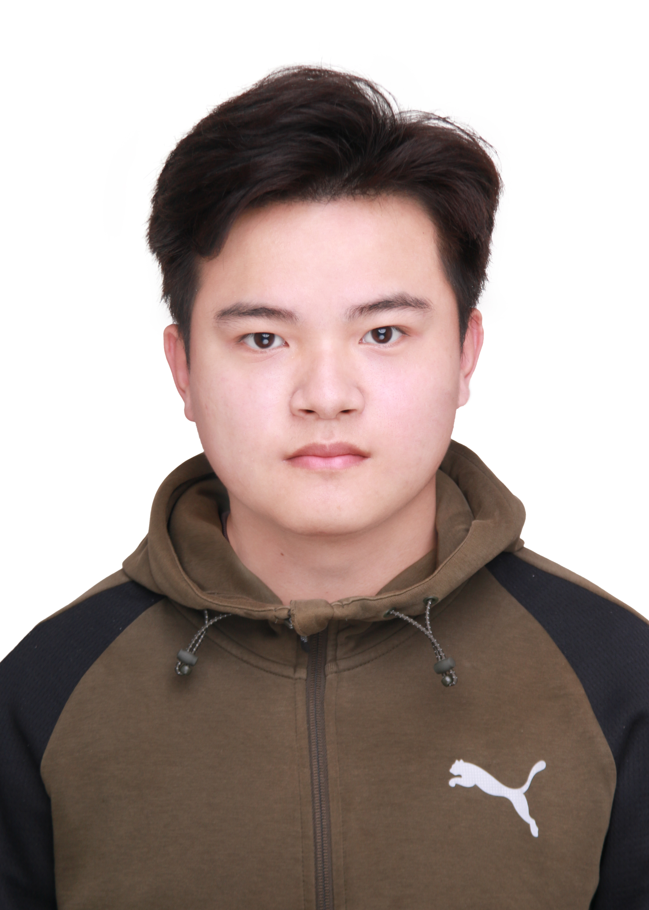

米祥悦 | XiangYue Mi

个人简介 / Biography
山东师范大学信息科学与工程学院在读研究生，研究领域：计算机视觉（CV）、多模态学习。
在研项目 / Ongoing Projects
KnowSAM+SGDL联合结构：融合SAM提示生成器与双分支分割模型（UNet/VNet），引入NIG不确定性建模、混合增强、伪标签蒸馏与EMA教师模型机制，用于医学图像分割。
已发表论文 / Publications
WSSS-CRAM:
precise segmentation of histopathological images via class region activation mapping（第二作者）
DOI: 10.3389/fmicb.2024.1483052
联系方式 / Contact
Email:
352319328@qq.com